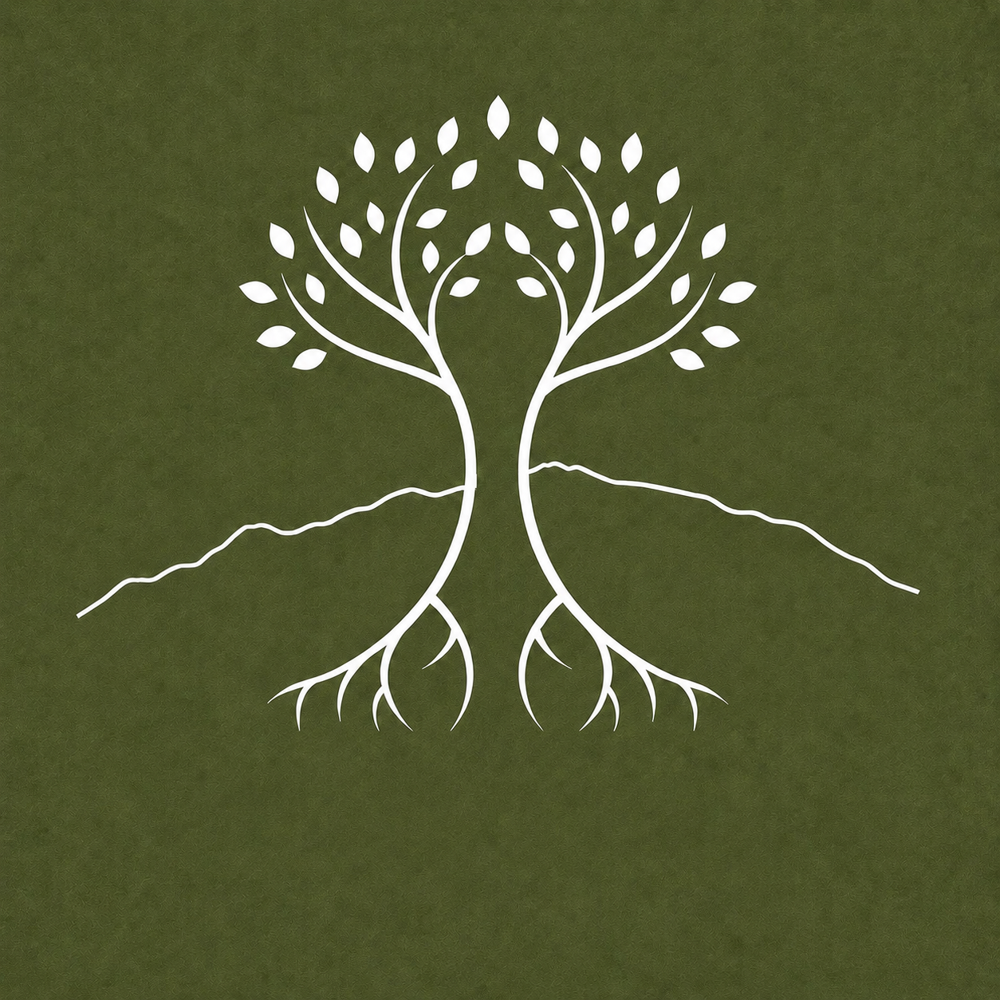

Nossa Visão
Transformar o Instituto Capanema em um território modelo de regeneração com consciência ambiental e cultural para o futuro, preservando a biodiversidade original, os costumes e tradições locais.

Instituto CapanemaUm território de regeneração ambiental, permacultura, educação e reconexão com a natureza na Estrada Real.
Conheça o InstitutoSobre o Instituto
O Instituto Capanema nasce do encontro entre natureza, cultura e regeneração.
Em meio às montanhas da Serra do Capanema, onde as águas encontram as matas e a história se entrelaça com a paisagem da Estrada Real, surge um espaço dedicado ao cuidado da vida em todas as suas formas.
Acreditamos que a crise ambiental é também uma crise de desconexão. Desconexão da natureza, dos ciclos naturais, das comunidades e de nossa própria essência.
Por isso, nossa missão vai além de plantar árvores ou recuperar áreas degradadas. Buscamos restaurar relações: entre pessoas e natureza, entre produção e conservação, entre conhecimento e prática, entre matéria e ambiente.
Nossa Essência
Um território no distrito de Glaura – Ouro Preto – na Estrada Real de Minas Gerais, onde por aqui os tropeiros e inconfidentes fizeram o percurso do minério, ouro e outras riquezas que aqui faziam passagem. Mas a história e costumes perduram e é este resgate e preservação das tradições que também fazem sentido para o Instituto Capanema.
Para além do conceito de preservação, regeneração e sustentabilidade do meio ambiente, temos terreno fértil para a sustentação sociocultural e histórica das pessoas que aqui vivem.
Idealizamos um lugar onde a terra é cuidada com respeito, onde a água é protegida como fonte de vida, onde as florestas são vistas como mestras e onde cada ser vivo possui valor e propósito.
Missão e Valores
Promover a regeneração ambiental, cultural e humana por meio da permacultura, da educação, da conservação da biodiversidade e do fortalecimento da conexão com a natureza.
Transformar o Instituto Capanema em um território modelo de regeneração com consciência ambiental e cultural para o futuro, preservando a biodiversidade original, os costumes e tradições locais.
O Chamado da Serra do Capanema
Costumes locais
Aréa de Preservação
Permacultura
Agrofloresta
Natureza
Economia Circular
Meio Ambiente
Aréas regenerativas e sustentáveis
A Serra do Capanema não é apenas a paisagem que abriga o Instituto.
Ela é inspiração, memória e presença.
Suas montanhas, águas e florestas nos lembram diariamente que somos parte de algo maior.
O Instituto nasce como resposta a esse chamado: proteger, regenerar e honrar a vida existente neste território.
Projeto principal
O principal projeto do Instituto consiste na criação de um corredor ecológico ligando duas áreas de mata nativa existentes na propriedade e apoiando a proteção dos cursos de água que cruzam o terreno.
Mais do que uma conexão física entre florestas, este corredor integra paisagens, águas e história local para fortalecer a restauração ambiental e cultural.
Integração de aspectos ESG e inclusão do conhecimento popular dos moradores da região são premissas para o desenvolvimento de nosso projeto.
Educação para a Regeneração
O Instituto promoverá experiências capazes de unir conhecimento técnico e desenvolvimento humano.
Cursos, oficinas, vivências e encontros abordarão temas como:
Nosso objetivo é formar pessoas capazes de cuidar do mundo a partir da transformação de si mesmas.
Espaços de Vivência
O Instituto será composto por ambientes destinados à aprendizagem, contemplação e convivência:
Nosso Propósito
Existimos para cuidar da Terra, cuidar das pessoas e compartilhar os excedentes.
Acreditamos que regenerar uma floresta é também regenerar relações.
Proteger uma nascente é proteger futuros.
Cultivar alimentos é cultivar abundância.
E reconectar-se com a natureza é reencontrar uma parte essencial de si mesmo.
O Instituto Capanema é um convite.
Um convite para lembrar que somos natureza.
E que o futuro que buscamos começa na forma como escolhemos viver hoje.
Perguntas Frequentes
Este é um projeto em construção. O Instituto ainda está sendo implantado fisicamente, com foco inicial na apresentação de sua missão, seus valores e seus projetos.
Sim. A proposta prevê cursos, oficinas, vivências e encontros sobre permacultura, agrofloresta, bioconstrução, gestão da água, ecoturismo educativo, alimentação saudável, economia criativa e outras práticas voltadas à regeneração.
Contato
Envie uma mensagem para saber mais sobre o projeto, futuras vivências, parcerias e ações de regeneração.
E-mail: institutocapanema@gmail.com
Celular: +55 31 99602-1010
Conversar pelo WhatsAppLocalização